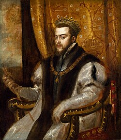

Re di Spagna profondamente cattolico, sostenne con forza la Controriforma e il Concilio di Trento, difendendo l'ortodossia religiosa.
Governò un vastissimo impero. Rafforzò l'Inquisizione e cercò di mantenere l'unità religiosa nei territori sotto il suo dominio.
Si scontrò con i protestanti nei Paesi Bassi e con l'Inghilterra anglicana, culminando nella sconfitta dell'Invincibile Armata nel 1588.